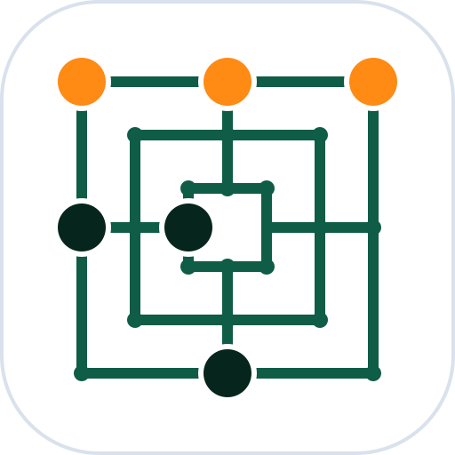

Mühle
Mühlen bilden und gegnerische Steine wegnehmen.
Spielstand
So geht's
- Setzen: Jeder setzt abwechselnd seine neun Steine auf Punkte.
- Ziehen: Danach schiebt man einen Stein auf einen freien, benachbarten Punkt.
- Drei Steine in einer Linie sind eine Mühle: Dann nimmst du einen Stein des Gegners weg (nicht aus einer Mühle, wenn es anders geht).
- Wer nur noch drei Steine hat, darf springen. Wer nur noch zwei hat oder nicht ziehen kann, verliert.